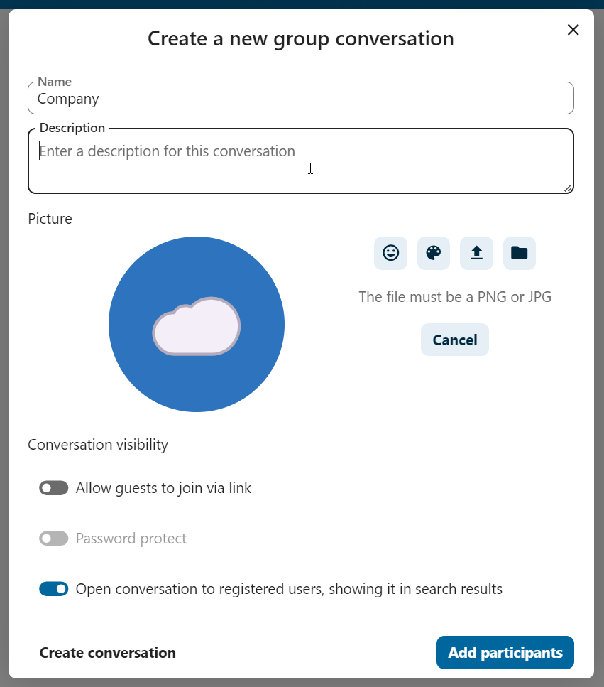
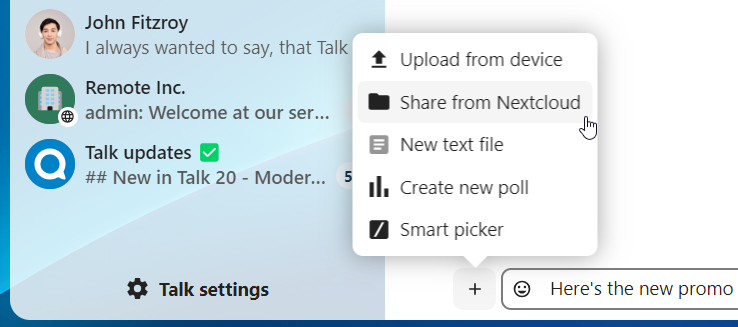
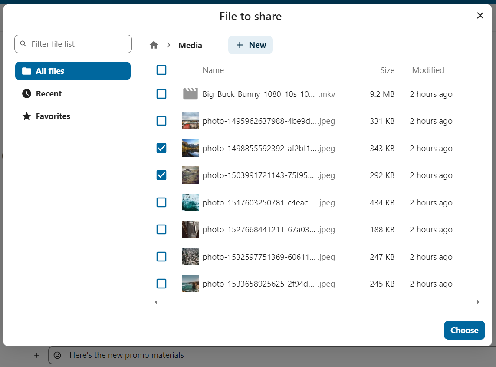
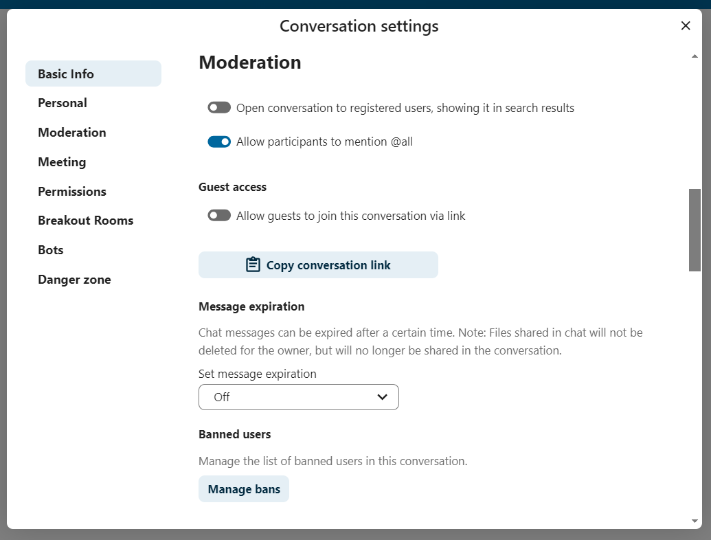
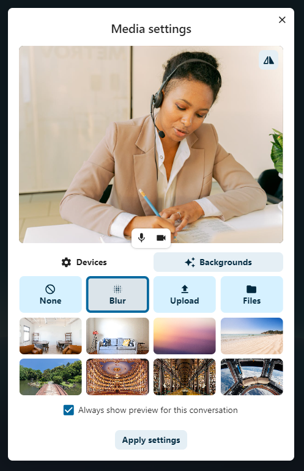

Загальні поняття Nextcloud Talk
Nextcloud Talk дозволяє вам створювати чати та відео дзвінки на вашому особистому сервері.
Чати та дзвінки створюються у розмовах. Ви можете створит будь яку кількість розмов. Існує два види розмов:
Віч-на-віч розмови Це коли у Вас є приватний чат або дзвінок з іншим користувачем Talk. Ви не можете додати інших людей до цієї розмови або поділитися нею за допомогою посилання. Ви можете розпочати віч-на-віч чат знайшовши іншого користувача в панелі пошука та клікнувши на його ім’я.
Групова розмова. Окрім персони, що створила цю розмову, групова розмова може мати будь-яку кількість людей. Групова розмова може бути публічно поширена за допомогою посилання, таким чином сторонні гості можуть приєднатися до дзвінка. Вона теж может бути відображена у списку і інші люди на вашому Nextcloud сервері зможуть приєднатися до спілкування.
Створити чат
You can create a direct, one-on-one chat by searching for the name of a user, a group or a team and clicking it. For a single user, a conversation is immediately created and you can start your chat. For a group or circle you get to pick a name and settings before you create the conversation and add the participants.

If you want to create a custom group conversation, click the button next to the search field and filters button and then on Create a new conversation.
{kind=link}
You can then pick a name for the conversation, put a description, and set up an avatar for it (with uploaded photo or emoji), and select if the conversation should be open to external users and if other users on the server can see and join the conversation.
{kind=link}
На наступному кроці Ви зможете додати учасників та завершити створення розмови.

After confirmation you will be redirected to the new conversation and can start communicating right away.

View all open conversations
You can view all the conversations that you can join by clicking the button next to the search field and filters button and then on Join open conversations.

Filter your conversations
You can filter your conversations using the filter button located next to the search field. There are two options for filtering: 1. Filter unread mentions: This option allows you to view group conversations with unread mentions or unread one-on-one conversations. 2. Filter unread messages: This option allows you to view all unread messages in all joined conversations.

You can then clear the filter from the filters menu.

Поділитися файлами у чаті
Ви можете поділитися файлами у чаті в один з 3х способів.
По-перше, ви можете просто перетягнути їх на чат.

По-друге, Ви можете обрати файл з Ваших Nextcloud Files або файлового менеджеру обравши маленьку скрепку та вибравши звідки Ви хочете додати файл.
 {kind=link}
{kind=link}
You can add more files until you are done and decide to share the files. You can also add a text caption to your shared files, providing a brief description or context.

Усі користувачі будуть у змозі натиснути на файл щоб продивитися його, редагувати або скачати, незалежно від того, чи мають вони обліковий запис. Користувачі з обліковим записом будуть мати змогу автоматично отримати файли якими з ними поділилися, тоді як незареєстровані гості отримають файли як посилання.

Додавання emoji
Ви можете додавати emoji використовоючи селектор зліва від поля вводу.

Editing messages
You can edit messages and captions to file shares up to 6 hours after sending.

Using Markdown
You can enhance your messages with a markdown syntax support. See list for usage:
Headings and dividers
# Heading 1
## Heading 2
### Heading 3
#### Heading 4
##### Heading 5
###### Heading 6
Heading
===
Normal text
***
Normal text
Inline decorations
**bold text** __bold text__
*italicized text* _italicized text_
`inline code` ``inline code``
```
.code-block {
display: pre;
}
```
Lists
1. Ordered list
2. Ordered list
* Unordered list
- Unordered list
+ Unordered list
Quotes
> blockquote
second line of blockquote
Task lists
- [ ] task to be done
- [x] completed task
Tables
Column A | Column B
-- | --
Data A | Data B
Setting reminder on messages
You can set reminders on specific messages. If there’s an important message you want to be notified about later, simply hover over it and click on the reminder icon.

In the submenu, you can select an appropriate time to receive a notification later.

Відповідь на повідомлення та інше
Ви может відповісти на повідомлення використовуючи стрілку, яка з’являється при наведенні курсору на повідомлення.

В меню … Ви також зможете вибрати відповісти приватно. Це відкрие віч-на-віч розмову.
{kind=link}
Тут ви також можете створити пряме посилання на повідомлення або відмітити його як не прочитане таким чином чати буде прокручений назад на нього під час наступного входу. Якщо це файл - Ви можете переглянути його в Files/
Silent messages
If you don’t want to disturb anyone in the middle of the night, there is a silent mode for chatting. While it is enabled, other participants will not receive notifications from your messages.

Керування розмовою
Ви завжди є модератором у вашій новій бесіді. У списку учасників ви можете підвищити інших учасників до модераторів за допомогою меню ... праворуч від їхніх імен користувачів, призначити їм спеціальні дозволи або видалити їх із розмови.
Зміна дозволів користувача, який приєднався до загальнодоступної бесіди, також назавжди додасть його до бесіди.

Moderators can configure the conversation. Select Conversation settings from the ... menu of the conversation on the top to access the settings.
{kind=link}
Тут ви можете налаштувати опис, гостьовий доступ, чи буде бесіда видима для інших на сервері тощо.
{kind=link}
Messages expiration
A moderator can configure message expiration under the Conversation settings within the Moderation section. Once a message reaches its expiration time, it is automatically removed from the conversation.
The available expiration durations are 1 hour, 8 hours, 1 day, 1 week, 4 weeks, or never (which is the default setting).
{kind=link}
Початок дзвінка
When you’re in a conversation, you can start a call any time with the Start call button. Other participants will get notified and can join the call.

If somebody else has started a call already, the button will change in a green Join call button.

Під час дзвінка ви можете вимкнути мікрофон і вимкнути відео за допомогою кнопок у правій частині верхньої панелі або за допомогою комбінацій клавіш M, щоб вимкнути звук, і V, щоб вимкнути відео. Ви також можете використовувати пробіл, щоб увімкнути звук. Якщо звук вимкнено, натискання пробілу ввімкне звук, щоб ви могли говорити, доки не відпустите клавішу пробілу. Якщо звук увімкнено, натискання пробілу вимкне звук, доки ви не відпустите його.
Ви можете вимкнути Ваше відео (корисно під час показу екрану) за допомогою маленької стрілки якраз над відео потоком. Щоб повернути його назад - натисніть стрілку ще раз.
Ви можете отримати доступ до своїх налаштувань і вибрати іншу веб-камеру, мікрофон та інші налаштування в меню ... на верхній панелі.
{kind=link}
From media settings dialog, you can also change the background of your video.
{kind=link}
You can change other settings in the Talk settings dialog.
{kind=link}
{kind=link}
Зміна вигляду під час дзвінку
Ви можете зміните вигляд під час дзвінку на promoted-view або сітку за допомогою значку з чотирма блоками зверху праворуч. Сітка буде показувати усіх учасників однакового розміру та якщо люди не вміщуються в екран - будуть показані кнопки, що дозволять навігацію.

Promoted-view буде покаувати людину, що зараз говорить, великого розміру а інших - у рядок нижче. Якщо люди не вміщуються в екран - з’являться кнопки, що дозволять навігацію.